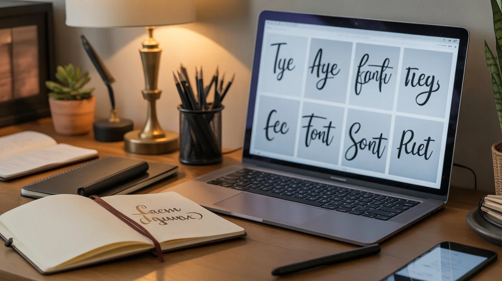

UX Design 4 min
UX Writing: L'Arte delle Parole
Come il copywriting influenza l'esperienza utente e migliora la conversione.
10 Aug 2025Leggi di più →
Esplora gli ultimi articoli su design, sviluppo e creatività digitale

UX Design 4 min
Come il copywriting influenza l'esperienza utente e migliora la conversione.